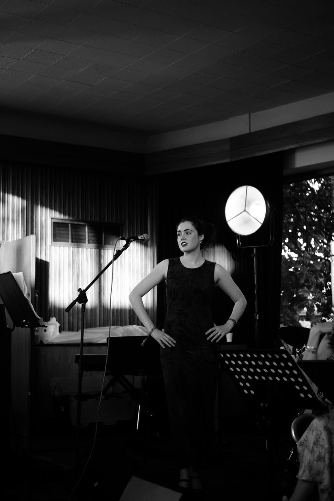

01 — About

Sofia Isobel is a singer-songwriter from Berkshire, in the UK. While studying Spanish and Italian at The University of Oxford, she began writing and recording original music inspired by love, heartbreak, and classic jazz influences.
She recorded in Metropolis Studios in London and Flux Studios in New York, released the EP Almost Blue. She gained millions of views on tik tok for her songs I Wish You Were a Song and Don’t Leave Me Behind (for America) in which she roams the streets of Greenwich Village at night.
Her affinity for soul singers such as Donny Hathaway also shines through, inspiring her song, Mr. Donny Hathaway. Sofia Isobel has played at Nublu in New York, the Half Moon at Putney, and has opened for Ward Thomas’ tours up and down the UK, accompanied solely by guitar. It was during a heavy Oxford term that she managed to complete the tour.
Her songs (such as Edge of A Dream) have been played by Berkshire and Oxfordshire BBC Radio Introducing. Most recently, Sofia was lead singer of the Oxford University Jazz Orchestra, Salsa Band, and Pembroke College Jazz Band, performing regularly at college events, balls, and concerts.
Having graduated, Sofia Isobel plans to devote her time to performing and her music. Her latest release is a rendition of the iconic song Misty.
“Sofia is [....] .”Journalist X, Publication Name